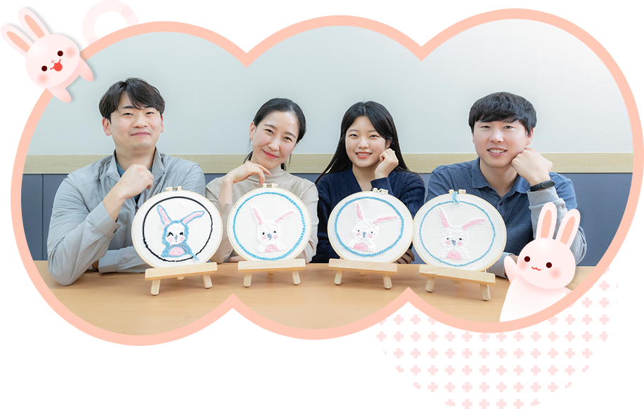
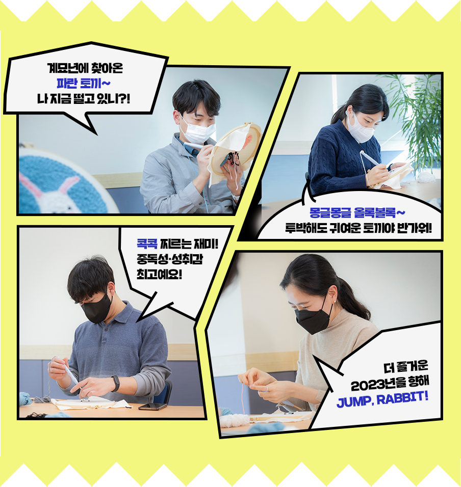
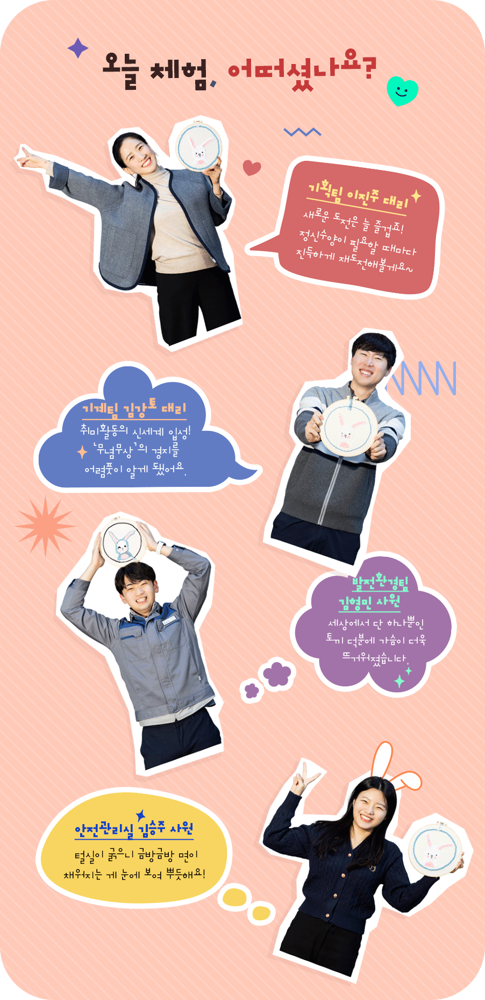
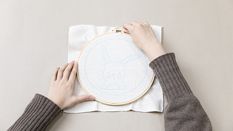
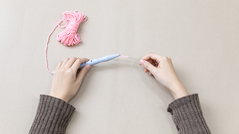
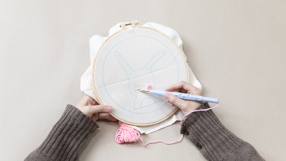
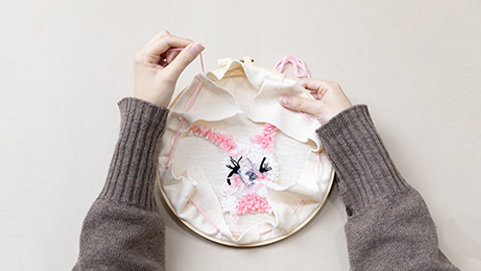
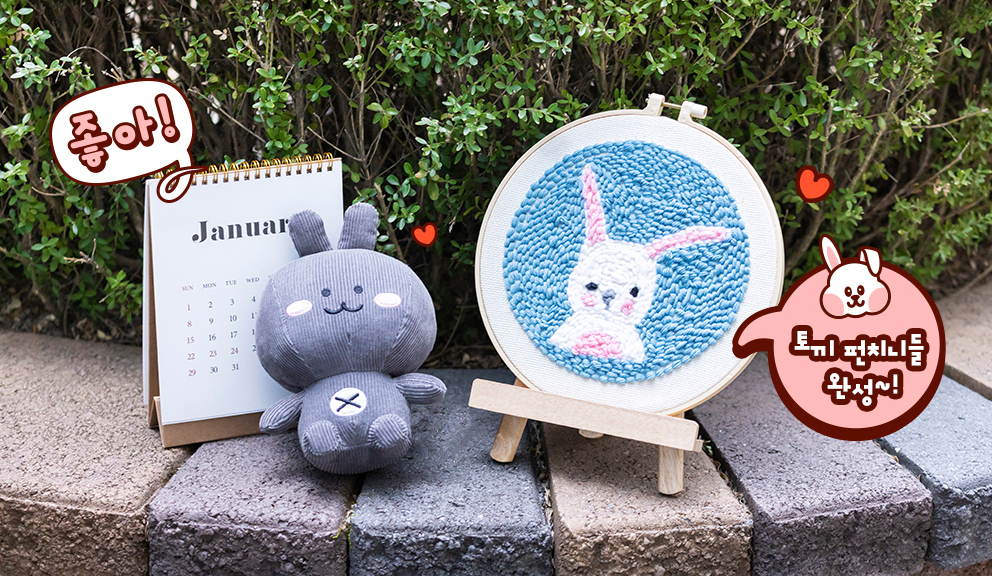

글. 윤진아 사진. 이승헌
실과 천만 있다면 언제 어디서든 할 수 있다. 세상에서 가장 쉬운 자수, ‘펀치니들(Punch Needle)’은 특수 제작된 바늘에 털실을 끼워 수놓는 공예다. 계묘년 검은 토끼해를 맞아 더 높은 도약을 기원하며 마련한 펀치니들 클래스! 초간단 자수기법을 활용해 일상을 수놓는 즐거움을 대구그린파워 네 명의 도전자가 체험했다.

“세상 단 하나뿐인 토끼를 직접 만들어 보자!”는 구호와 함께 '뚝딱! 공작시간'의 막이 올랐다. 토끼 도안이 그려진 천을 수틀에 끼우고 바늘귀에 털실을 끼우는 도전자들의 표정이 자못 비장하다. 토끼 같은 아들에게 선물할 역작에 도전한 이진주 대리는 전통 십자수와 프랑스 자수 경력자라는 남다른 이력으로 일순간 기대주로 부상했다. “아들이 제일 좋아하는 애착인형이 토끼라서 의욕이 샘솟네요(웃음). 손으로 무언가를 만드는 건 정말 오랜만인데, 좋은 사람들과 새로운 도전을 함께하는 과정 자체가 즐거워요.”
펀치니들은 두꺼운 실을 사용하기 때문에 결과물을 비교적 빨리 얻을 수 있어 곰손 초보자들에게 딱 좋은 취미다. 먼저 토끼 도안에 어울릴 컬러를 고려해 털실을 고르고, 수틀에 천을 끼운다. 실을 꿴 바늘 앞부분을 천의 구멍 사이에 넣었다가 빼면 OK! 면적이 넓은 부분부터 안쪽으로 계속 이동하면서 천 사이사이를 지날 때마다 예쁜 털실로 수가 놓인다. 유난히 큰 손에 꽉 쥔 바늘로 틈틈이 몸 개그를 선사한 김강토 대리는 시종일관 난관이다. 토끼 눈과의 사투를 벌이는 과정에서는 한숨을 열 번 넘게 내쉬었다. “바느질 자체가 처음이라 마음처럼 안 되네요. 지난해 특히 수고하신 전병권 과장님께 선물할 계획인데요. 좀 어설프긴 해도 토끼 안에 한 땀 한 땀 후배의 응원이 담겨 있으니, 올 한 해 선배님의 도약에 기운을 실어줄 겁니다(웃음).”

펀치니들은 좀 비뚤어지거나 땀의 크기가 맞지 않아도 크게 눈에 띄지 않아 부담이 덜하고 과감하게 수를 놓을 수 있다. 밋밋해 보였던 배경에 하얀 달 하나를 수놓더니 “이거야말로 화룡점정!”이라며 김형민 사원이 엄지를 치켜들었다. 실수인 듯 계획인 듯 곳곳에 심어둔 ‘포인트’들도 관전포인트다. 진행 내내 본의 아니게 동료에게 위안과 희망이 되어준 그였지만, 막판 뒷심으로 기대 이상의 수작을 완성해내며 근성을 인정받았다. “안 되는 일에 전전긍긍하는 대신 내가 원하는 대로 자유롭게 변경했더니 재미가 배가됐어요. 제일 마음에 드는 건 하트 눈과 파란 꼬리인데요. 솔직히 의도한 건 아니었는데, 실수가 포인트가 됐죠. 하하!”
바로 옆에선 김승주 사원의 고군분투가 시선을 잡아끈다. “어째 콧방울이 점점 길어지는가 싶더니 급기야 코끼리 코가 돼 당황스럽네요. 그래도 성실히 꿰다 보니 끝날 무렵에는 티 안 나게 숨길 수 있는 실력이 된 것 같아요. 동료들보다 확실히 진도가 더뎠지만, 하다 보니 손기술이 느는 걸 보며 ‘하면 된다’는 진리를 새삼 곱씹게 됐습니다.” 무념무상 반복하다 보니 어느덧 다음 단계를 채울 생각에 손이 근질근질해진다는 너스레에 미소가 고인다. 그새 정이 많이 든 토끼에게 ‘토끼리’라는 이름도 붙여줬단다. 정답이 아니더라도 줄기차게 엉뚱한 질문을 던지는 것이 더 즐거운 인생을 사는 묘책이라고 말하는 그녀의 표정이, 난생처음 토끼를 잡아본 아이처럼 들떠 보인다.
기본 자수 기법을 익혔다면, 이제부터는 조급한 마음과의 한판 승부다. 요령은 없다. 꾸준히 하면 는다. 펀치니들은 속도전에 지친 현대인들에게 더없이 좋은 취미다. 한 올 한 올 수를 이어 나가다 보면 복잡한 마음은 사라지고 차분히 마음을 모으며 오롯이 나에게 집중할 수 있기 때문이다. 평소 수많은 경우의 수를 따져가며 일하다가 단순한 자수 기법만으로 결과물을 완성하니 해방감마저 느껴진다는 네 사람. 마침내 완성된 세상 단 하나뿐인 토끼를 마주하는 표정에 보람이 그득하다. 도전자들의 야무진 손끝에서 탄생한 형형색색의 토끼도 금방이라도 뛰어오를 듯한 생동감으로 기운을 북돋운다. 가슴 가득 토끼의 기운을 품은 이들이 더 높은 도약을 준비한다. 다시 새로운 출발선에 선 도전자들이 한 땀 한 땀 채워갈 일상의 밀도만큼, 이들의 2023년도 나날이 다채롭고 풍성해지기를!

어렵지 않은 펀치니들(Punch Needle) 만들기. 함께 만들어요!

도안 아래 작은 수틀을 놓고 윗면에 큰 틀을 올린 다음 나사를 조인다.

실이 연결된 바늘을 대각선으로 넣어주고 실을 빼준다.

도안 뒷면에 손가락만큼 실을 빼고, 실을 잡은 채로 앞면으로 바늘을 빼준다. 토끼 귀, 몸통, 바탕도 색을 바꿔가며 같은 방법으로 수놓는다.

수틀 밖으로 나온 천을 정리해 완성한다.
